WES Canon - Configurer le profil WES
Créer le profil WES
Lors d'une installation initiale de Watchdoc, un profil WES peut être automatiquement créé et configuré à l'aide de paramètres par défaut par l'assistant d'installation. Outre ce premier profil WES par défaut, vous pouvez ajouter autant d'autres profils WES que nécessaires.
-
Depuis le Menu principal de l'interface d'administration, section Configuration, cliquez sur Web & WES :

-
Dans l'interface Web, WES & Destinations de numérisation - Gestion des interfaces clientes, cliquez sur Créer un nouveau profil WES.
-
Dans la liste, sélectionnez le type de profil à créer :
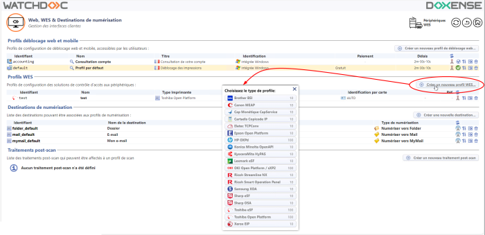
è vous accédez au formulaire Créer un profil WES comportant plusieurs sections dans lesquelles vous configurez votre WES.
Une barre de navigation vous aide à accéder rapidement à la section souhaitée :
Configurer le profil WES
Configurer la section Propriétés
Utilisez cette section pour indiquer les principales propriétés de WES :
-
Identifiant : saisissez l'identifiant unique du profil WES. Il peut comprendre des lettres, des chiffres et le caractère "_", avec un maximum de 64 caractères. Cet identifiant n'est affiché que dans les interfaces d'administration.
-
Nom : saisissez le nom du profil WES. Ce nom explicite n'est affiché que dans les interfaces d'administration.
-
Global : dans le cas d'une configuration de domaine (maître/esclaves), cochez cette case pour répliquer ce profil du serveur maître vers les autres serveurs.
-
Langue : sélectionnez la langue d'affichage du WES configuré. Si vous sélectionnez Détection automatique, le WES adopte la langue qu'il trouve par défaut dans la configuration de l'appareil.
-
Version : sélectionnez la version du WES. Pour la v3, vous pouvez personnaliser l'interface en choisissant la couleur des boutons et des images en fonction de votre identité graphique :
-
Couleur : entrez la valeur hexadécimale de la couleur correspondant à la couleur du bouton WES. Par défaut, les boutons sont orange (#FF901). Une fois la valeur saisie, la couleur s'affiche dans le champ.
-
Images : si vous souhaitez personnaliser les images WES, entrez le chemin du dossier dans lequel sont enregistrées les images que vous souhaitez afficher à la place des images par défaut (stockées dans C:\Program Files\Doxense\Watchdoc\Images\Embedded\Brands\[Nom_du_fabricant] par défaut).
N.B. : pour plus d'informations sur la procédure de personnalisation, cf. chapitre Personnaliser les boutons et l'image du WES.
-
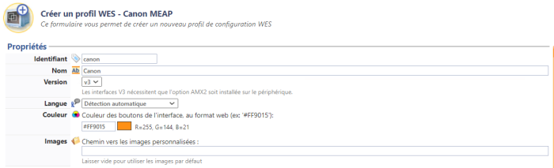
Configurer la section Authentification par clavier
-
Authentification par clavier
-
Annuaire : dans la liste, sélectionnez l'annuaire qui doit être interrogé lors de l'authentification par clavier. Si aucun annuaire n'est précisé, Watchdoc interroge l'annuaire par défaut :
-
Activer l'option : cochez la case pour autoriser l'authentification de l'utilisateur depuis un clavier physique ou tactile de l'écran, puis précisez les modalités de cette authentification :
-
Modes d'authentification :
-
Code PUK : le code PUK est un code (compris entre 6 et 10 chiffres) automatiquement généré par Watchdoc selon des paramètres définis dans l'annuaire et communiqué à l’utilisateur dans la page "Mon compte" ;
-
Nom d'utilisateur et code PIN : l'utilisateur s'authentifie à l'aide de son nom d'utilisateur ainsi que de son code PIN '1234, par exemple), enregistré comme attribut LDAP ou dans un fichier de type CVS ;
-
Nom d'utilisateur et mot de passe : l'utilisateur s'authentifie à l'aide de son compte LDAP (login et mot de passe) :
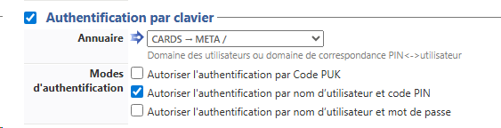
-
-
Configurer la section Authentification par badge
Authentification par badge : cochez la case pour autoriser l'authentification de l'utilisateur à l'aide d'un badge, puis précisez les modalités de cette authentification :
-
Annuaire : dans la liste, sélectionnez l'annuaire qui doit être interrogé lors de l'authentification par badge, en fonction de l'endroit où sont enregistrés les codes des badges (par ex.; si le code du badge est enregistré dans l'Active Directory, sélectionnez [utiliser l'annuaire par défaut] ; si les badges sont stockés dans la table SQL CARDS, sélectionnez CARDS , etc.) ;
-
Association auto : si vous autorisez l'enrôlement
 Action au cours de laquelle un compte utilisateur est associé au numéro de badge qui lui appartient. L'enrôlement est réalisé lors de la première utilisation d'un badge. L'enrôlement peut être réalisé par le responsable informatique lorsqu'il délivre le badge à un utilisateur ou par l'utilisateur lui-même qui saisit son identifiant (code PIN, code PUK ou identifiant et mot de passe) qui est alors associé à son numéro de badge. Une fois l'enrôlement réalisé, le numéro de badge est associé définitivement à son propriétaire. depuis le WES, précisez de quelle manière l'utilisateur associe son badge à son compte lors de la première utilisation :
Action au cours de laquelle un compte utilisateur est associé au numéro de badge qui lui appartient. L'enrôlement est réalisé lors de la première utilisation d'un badge. L'enrôlement peut être réalisé par le responsable informatique lorsqu'il délivre le badge à un utilisateur ou par l'utilisateur lui-même qui saisit son identifiant (code PIN, code PUK ou identifiant et mot de passe) qui est alors associé à son numéro de badge. Une fois l'enrôlement réalisé, le numéro de badge est associé définitivement à son propriétaire. depuis le WES, précisez de quelle manière l'utilisateur associe son badge à son compte lors de la première utilisation : -
Désactivé : l'enrôlement depuis le WES n'est pas autorisé. Si l'utilisateur n'est pas déjà connu, un message d'erreur est affiché sur l'écran du périphérique ;
-
Code PUK : l'utilisateur saisit son code PUK pour enrôler son badge;
-
Nom d'utilisateur et code PIN: l'utilisateur saisit ses nom et code PIN pour enrôler son badge ;
-
Nom d'utilisateur et mot de passe : l'utilisateur saisit son compte LDAP (login et mot de passe) pour enrôler son badge ;
-
Nom d'utilisateur et code d'impression : l'utilisateur s'authentifie à l'aide du nom de son compte LDAP ainsi que d'un code d'impression. Ce code (alphanumérique) est saisi au préalable par l'utilisateur dans la page "Mon Compte";
-
Envoyer une notification : cochez la case pour notifier l'utilisateur une fois son badge enrôlé.
-
-
Format : indiquez, si nécessaire, de quelle manière la chaîne de caractères du numéro du badge lu doit être transformée. Ex : raw;cut(0,8);swap. (cf. Changer le format du badge).
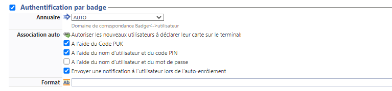
Configurer la section Comptabilisation
-
Périphérique > Comptabilise les impressions à partir du périphérique : cochez cette case si vous souhaitez que la comptabilisation soit prise en charge par le périphérique.

Configurer la section Connexion anonyme
Cochez cette section pour activer la Connexion anonyme afin de permettre à un utilisateur non-authentifié d'accéder au périphérique en cliquant sur un bouton spécifique.
-
Titre du bouton : saisissez le libellé affiché sur le bouton d'accès aux fonctions du périphérique. Par défaut, le texte est Anonymous :

N.B. : il est possible de restreindre les fonctionnalités dont l'utilisateur anonyme peut bénéficier en appliquant une politique de droits (sur la file, sur le groupe ou sur le serveur) en utilisant le filtre Utilisateur anonyme.
Configurer la section Quota
-
Activer l'option : cochez la case pour que le WES gère les quotas d'impression.
N.B. : cette fonction est incompatible avec la connexion anonyme.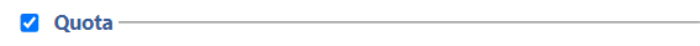
Dans le cas où vous cochez la case, complétez la configuration :
- en ajoutant au moins un quota ;
- en appliquant les PMV et tarifs sur les files d'impression associées au WES (cf. (cf. article Configurer les quotas).
Configurer la section Impression à la demande
Dans cette section, vous précisez les paramètres liés à la fonction d'impression à la demande, c'est-à-dire l'interface depuis laquelle l'utilisateur accède à ses travaux en attente et depuis laquelle il supprime ou valide les impressions :
-
Ordre de tri : dans la liste, sélectionnez l'ordre dans lequel les impressions doivent être présentées sur le WES :
-
Chronologique inverse: du plus récent au plus ancien ;
-
Chronologique: du plus ancien au plus récent.
-
Débloquer tous les documents à la connexion : cochez la case pour faire en sorte que tous les travaux en attente soient automatiquement imprimés lorsque l'utilisateur s'authentifie sur le périphérique d'impression.
Dans ce cas, l'utilisateur n'accède pas à la liste des travaux en attente pour choisir ceux qu'il souhaite imprimer.
-
-
Pages optionnelles - Activer la page zoom : cochez cette case pour que l'utilisateur puisse activer la vue détaillée des pages des travaux en attente d'impression ;
-
Options d'affichage : dans la liste, sélectionnez l'information tarifaire affichée à l'utilisateur via le WES : aucun, le prix ou le coût de ses impressions.
-
Forcer l'affichage monétaire sur 2 décimales : cochez la case pour limiter l'affichage du prix à 2 décimales uniquement.
-
Utiliser un logo personnalisé :(pour le WES V2 uniquement) cochez la case si vous souhaitez afficher un logo personnalisé à la place du logo Watchdoc par défaut.
-
Afficher les messages d'avertissement : cochez cette case si vous souhaitez informer les utilisateurs de la politique d'impression mise en place qui pourrait modifier leurs choix initiaux.
-
-
Symbole monétaire : modifier la valeur du symbole : cochez la case si vous souhaitez appliquer une autre valeur que l'euro (€ par défaut), puis indiquez dans le champ suivant le symbole que vous souhaitez.
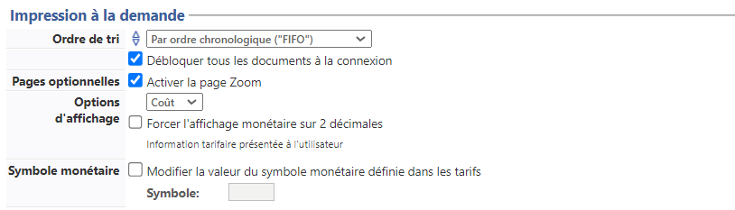
Configurer la section Périphérique
Cette section permet de définir le mode de connexion entre le serveur et les périphériques d'impression.
-
Réseau : saisissez des valeurs dans les champs pour régler :
-
le temps d'attente maximal pour la connexion entre le périphérique d'impression et Watchdoc lors d'une requête (serveur éteint ou service arrêté). Au-delà, la tentative de connexion échoue, Watchdoc relance la connexion ;
-
le temps d'attente du traitement de la requête : récupération des infos sur un utilisateur, envoi et traitement des requêtes de comptabilisation. Au-delà, la requête échoue et Watchdoc relance la requête.
-
-
Adresse du serveur : ce paramètre permet de préciser si les périphériques d'impression se connectent via l'adresse IP ou le nom DNS (déterminés au démarrage du service) du server Watchdoc. Si le serveur possède plusieurs adresses IP ou si vous voulez spécifier manuellement l'adresse, sélectionnez "Adresse ci-contre" et remplissez le champ.
N.B. : s i le serveur possède plusieurs adresses IP, Watchdoc utilise la première qu'il trouve.
Si le périphérique se trouve sur un autre VLAN, il se peut que le WES n'arrive pas à contacter Watchdoc.
Dans ce cas :-
créez un profil WES par adresse IP
-
optez pour Adresse ci-contre en précisant une IP pour chaque profil
-
lors de l'installation du WES sur la file d'impression, sélectionnez le WES qui correspond au VLAN du périphérique.
-
- Mode de connexion : permet de sélectionner le mode de communication entre le WES et lWatchdoc pour préciser si l'accès est sécurisé ou non :
SSL : le WES utilise exclusivement le SSL pour communiquer avec le serveur ;
Mixte : le WES utilise SSL pour les données sensibles (Code PUK, login/mdp, ...) et non SSL pour les données non sensibles ;
SSL désactivé : le WES n'utilise jamais le SSL pour communiquer avec le serveur. Il est recommandé de ne pas utiliser la connexion ou l'enrôlement par login/mot de passe avec ce paramètre.
-
Point d'entrée sécurisé : si vous avez sélectionné un mode de connexion SSL ou Mixte, depuis la v. 6.1.0.5262, vous pouvez préciser si vous souhaitez utiliser :
-
le point d'entrée personnalisé (préalablement configuré dans la section DSP (cf. Configurer le Serveur web) :
-
le port 5753 par défaut du serveur Watchdoc ;
-
-
Sécurité du périphérique: indiquez le Compte (login) et le mot de passe administrateur du périphérique dont Watchdoc a besoin pour communiquer avec lui lors de certaines opérations (installation automatique, requêtes SOAP...).
-
Gestion des fichiers de licence : ces champs servent à gérer les licences Canon dans le cas où elles doivent être appliquées en masse sur un grand nombre de périphériques (au delà de 11 simultanément). Dans ce cas, il convient d'avoir préalablement téléchargé et enregistré les 2 fichiers de licences. Vous pouvez alors cocher la case et indiquer dans les 2 champs suivants le dossier dans lequel sont enregistrés les fichiers de licences :
-
Nom du fichier d'authentification : indiquez dans ce champ le nom du fichier de licence permettant l'authentification ;
-
Nom du fichier d'impression à la demande : indiquez dans ce champ le nom du sfichier de licence permettant l'impression à la demande.
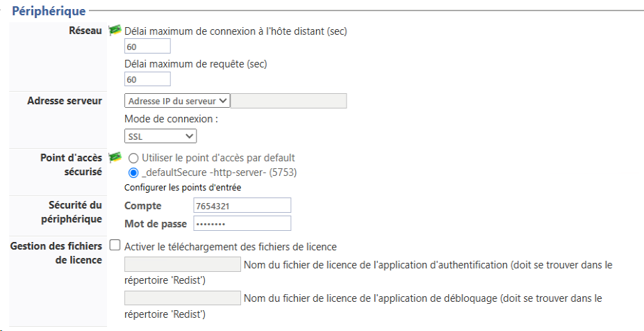
-
Configurer la section Scan vers dossier personnel
-
Cochez la case pour activer cette fonction de numérisation supportée par le périphérique. Une fois authentifié dans le WES, l'utilisateur voit s'afficher un bouton "Scan" qui l'envoie vers la fonction de numérisation Canon.
Pour accéder à cette fonction, Watchdoc a besoin des paramètres suivants :
-
Identifiants : fournissez les paramètres permettant à Watchdoc d'accéder à la fonction (s'il ne s'agit pas des paramètres par défaut).
-
Domaine : saisissez le nom de l'annuaire dans lequel est enregistré le compte d'accès ;
-
Nom de compte : le compte doit avoir les droits en écriture sur le sous-dossier spécifié ;
-
Mot de passe : indiquez le mot de passe du compte autorisé à écrire dans le sous-dossier spécifié.
-
-
Options - Sous-dossier : indiquez dans ce champ le sous-dossier (spécifique aux scans) à créer dans chaque dossier personnel de l'utilisateur.
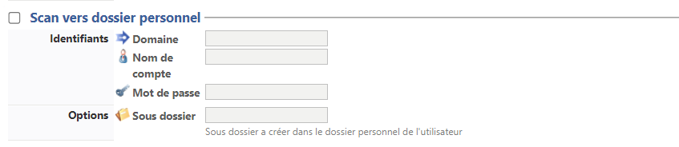
Configurer la section Options de secours
Dans cette section, vous configurez le comportement des périphériques d'impression dans le cas où le serveur Watchdoc® ne répond pas.
-
Délai de ping : indiquez, en secondes, la fréquence à laquelle le périphérique interroge le serveur pour vérifier sa configuration et l'informer qu'il fonctionne correctement ;
-
Nombre d'essais : indiquez le nombre de connexions que le périphérique doit tenter vers le serveur principal avant de passer au serveur de secours.
-
Mode hors-ligne :activez ou désactivez le mode hors-ligne
Ce mode rend le périphérique d'impression capable de fonctionner de manière dégradée dans le cas où les serveurs d'impression (principal et de secours) sont en panne. En mode hors-ligne, l'impression est impossible, mais les autres fonctions du périphérique telles que la photocopie, le fax et le scan peuvent être proposées.
En cas de panne des serveurs, si le mode hors-ligne est désactivé, toutes les fonctions du périphérique sont bloquées jusqu'à dépannage du serveur.
Ce mode est configuré dans le profil WES appliqué sur le périphérique. pour autoriser ou refuser l'authentification en cas de panne du serveur. -
Droits en mode hors‑ligne : en cas de panne du serveur, indiquez quelles sont les fonctions mises à disposition des utilisateurs sur le périphérique :
-
Accès à la copie : cochez la case pour autoriser l'utilisateur à photocopier ;
-
Accès au scan : cochez la case pour autoriser l'utilisateur à numériser ;
-
Accès à la couleur : cochez la case pour autoriser l'utilisateur à imprimer des documents en couleur ;
-
Accès au fax : cochez la case pour autoriser l'utilisateur à envoyer des documents par fax ;
-
Accès à l'impression : cochez la case pour autoriser l'utilisateur à imprimer des documents
-
-
Options multiserveur : cochez cette case pour relayer les demandes vers un serveur de secours en cas de panne du serveur auquel est associé le WES, puis saisissez dans le tableau les informations permettant d'y accéder :
-
adressse serveur de secours ;
-
port https ;
-
port http.
-
-
Options du serveur de secours : précisez les fonctions assurées par le serveur de secours :
-
Désactiver l'authentification des utilisateurs : cochez cette case si le serveur de secours n'authentifie pas les utilisateurs. Pour chaque demande, il renvoie les informations d'un utilisateur anonyme avec les droits définis pour un utilistateur de type anonoyme sur le serveur principal. Les travaux réalisés sont alors comptabilisés sous le compte "anonymous" ;
-
Désactiver l'accounting : cochez cette case si le serveur de secours ne traite pas les informations de comptabilisation. Ces informations sont enregistrées localement sur le périphérique et sont envoyées au serveur principal dès que la connexion avec ce serveur est rétablie ;
-
Désactiver l'impression à la demande : cochez cette case si le serveur ne permet pas ce mode d'impression ;
-
Désactiver l'enrôlement des badges : cochez cette case si le serveur de secours ne peut assurer l'enrôlement
Action au cours de laquelle un compte utilisateur est associé au numéro de badge qui lui appartient. L'enrôlement est réalisé lors de la première utilisation d'un badge. L'enrôlement peut être réalisé par le responsable informatique lorsqu'il délivre le badge à un utilisateur ou par l'utilisateur lui-même qui saisit son identifiant (code PIN, code PUK ou identifiant et mot de passe) qui est alors associé à son numéro de badge. Une fois l'enrôlement réalisé, le numéro de badge est associé définitivement à son propriétaire. des badges. Dans ce cas, seuls les badges déjà connus peuvent être utilisés sur le serveur de secours :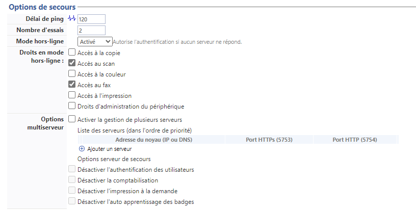
-
{kind=link}
Configurer la section Divers
-
Options des logs - Emplacement : indiquez à quel emplacement l'application doit collecter les informations qu'elle enregistre dans les fichiers traces :
-
fichier : cochez cette case pour que les informations soient enregistrées dans un fichier accessible par Watchdoc ;
-
périphérique :cochez cette case pour que les informations soient enregistrées sur le périphérique ;
-
tous : cochez cette case pour que les informations soient enregistrées dans un fichier accessible par Watchdoc et sur le périphérique.
-
-
Options des logs - Niveau : indiquez le niveau de détail des informations enregistrées :
-
debug : sélectionnez ce choix pour garder les traces laissées en cas de dysfonctionnement du WES ;
-
verbose : sélectionnez ce choix pour garder toutes les traces laissées par le WES ;
-
info : sélectionnez ce choix pour garder toutes les traces laissées par le WES ;
-
warning : sélectionnez ce choix pour garder toutes les traces laissées par le WES ;
-
error : sélectionnez ce choix pour garder les traces laissées lorsqu'une erreur est détectée au niveau du WES.
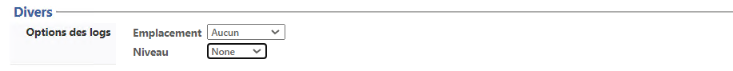
-
Configurer la section Historique
Dans cette section sont affichées les informations relatives au profil WES configuré et aux modifications qui y ont été apportées. 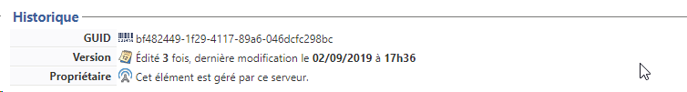
{kind=link}
Valider le profil
1. Cliquez sur le bouton pour valider la configuration du profil WES.
→ Une fois validé, le profil WES peut être appliqué sur une file d'impression.